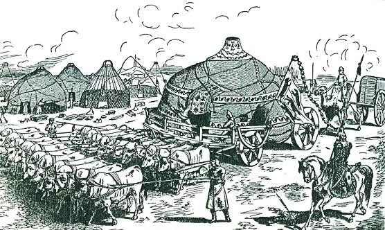
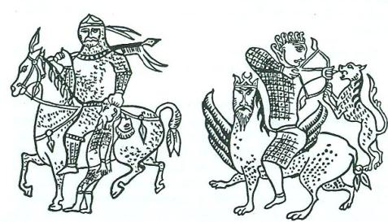
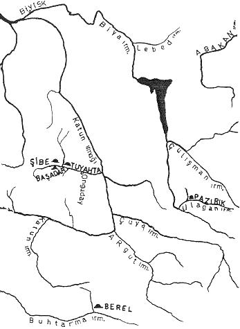

M.Ö. 204 senesinden, itibaren Orta Asya büyük olaylara hazırlanıyordu. Bu sebeple Çinliler gözlerini Kuzey-Batıya dikmiş ve neler olduğunu hayal meyal de olsa seçmeğe çalışıyorlardı. Bu zamana kadar Çin, kendi kabuğuna çekilmiş ve kendi dünyasında yaşıyordu. Esasen Çinliler bu çağda kendi ülkelerinden başka bir yeri de tanımıyorlardı. Onlara göre yeryüzünde tek devlet kendi ülkeleri idi. Çin, dünyanın ortasında bulunuyor, barbar ve vahşi olan diğer milletler de Çin'i bir halka gibi çeviriyorlardı. Şimdiki Çinliler bile kendi devletlerine Chung-kuo, yani "Orta memleket " veya "Orta devlet" derler.
Mete'nin tarih sahnesine çıkışına kadar bu Çin düşünce düzeni değişmeden devam etmişti. Mete'nin ortaya çıkması ile Çin devleti ile beraber Çinlilerin dünya görüşü de, temellerinden itibaren sarsılmaya başladı. Herkes anlamıştı ki, yeryüzünde en güçlü devlet olarak yalnız Çin değildi. Çin'in yanında daha kuvvetli ve daha düzenli bir Hun devleti de vardı. Bu suretle yeryüzünde orta devlet ikileşmiş oluyordu. Bunun gibi birçok tesirler Çin devlet felsefesinin değişmesine yol açtı. Fakat Çin, muhafazakâr ve mağrurdu. Aslında eski devlet felsefesinden vazgeçmiyordu. Fakat pratikte birçok yeni siyaset ve stratejiler uygulamak zorunda kaldı. Büyük Hun devleti karşısında hayatını korumak zorunda olan Çin, hayal âlemini bırakmış ve gerçek hayata uyma çabasına girmişti. Tarih boyunca Çin'in başarısı, karşısındaki düşmanı tanıması ile ilgilidir. Bu sebeple bütün gözler Büyük Hun Devletine çevrilecek ve onlar hakkında geniş ve sağlam bilgi toplanacaktır.
Mete'nin gençliği sırasında Büyük Hun devleti, Çin için büyük bir tehlike teşkil etmiyordu. Bu sebeple toplanan bilgiler sonradan olduğu gibi bizzat görülerek değil; ancak duyularak elde edilmişti. Mete'nin Çin'e yaptığı seferlerinden sonra Çinliler onu daha iyi tanımışlardı. Fakat onun biyografyasını tamamlamak için, gençliği hakkında da bilgi vermek lazımdı. Mete bir cihan imparatoru olmuş ve halkının gözünde efsaneleşmişti. Çinlilerin, Mete'nin gençliği hakkında bildikleri ise, sadece onun halkından duydukları idi.
Çin kaynaklarını okuyabilen herkes bilir ki, Mete'nin gençliğine ait bilgiler bir hikâye ve masal üslubu ile yazılmıştır. Mete'nin Çin akınları başlayınca, bu üslup tamamı ile değişir ve meşhur Çin tarih yazıcılığı başlardı. Bu satırları Mete ile ilgili Çince metinleri defalarca okumuş ve tahlil etmiş bir kimse olarak anlayışımıza göre yazıyoruz.
Mete'nin gençliğinde, Orta Asya’nın etnik durumu: Mete bir Hun İmparatoru idi. Hunların içinde doğmuştu ve bir Hun idi. Hunlar daha ziyade Tanrı dağlarının Doğu uçlarından batıya doğru uzanan büyük bir kitle idiler. Batıda nereye kadar uzadıklarını bilmiyoruz. Çünkü elimizde hiç bir kaynak yoktur, öyle anlaşılıyor ki, kuzey-batıda Volga ırmağına; güney-batıda da Türkistan'a kadar uzanan bölgelerde yaşayan halklar onların akrabaları idiler. İmparatorluk kurulduktan sonra tıpkı Göktürk devletinde olduğu gibi, devletin ağırlığı ve imparatorluğun başkenti doğuya kaymış ve başkent, Orhun nehrinin kaynaklarını aldığı Ötügen bölgesinde kurulmuştu. Burası, bütün Orta Asya’nın en kutsal bir yeri idi. İnanca göre, bütün büyük imparatorlukların başkenti burada kurulmalı idi. Esasen bu bölgeyi ele geçiremeyen ve başkentini de burada kuramayan bir devlet, büyük bir teşekkül veya imparatorluk sayılmazdı. Bu sebeple Avar, Göktürk, Uygur ve hatta Çingiz Han'ın kurduğu Moğol imparatorluğu bile biraz geliştikten sonra, başkentlerini buraya taşımışlardı.1
Büyük Hun İmparatorluğu hakkındaki başlıca kaynaklarımız Çin tarihçileridir. Çin tarihleri ise Hiyunların yalnızca doğudaki faaliyetlerinden söz açarlar. Bu kaynaklara bakan birçok batılı bilginler, Büyük Hun devletinin bir Doğu Asya imparatorluğu olduğunu zannetmişlerdi. Hâlbuki Doğu Asya Hunların eline, ancak Mete'nin Tunguz’ları mağlup edişinden sonra geçmişti. Biz Hunların esas yerini öğrenmek için daha başka türlü metotlar takip ettik. Büyük Hun İmparatorluğunun kuruluşundan aşağı yukarı yüz sene sonra, Doğu Asya Hunların elinden çıkmıştı. Fakat Hunlar buna rağmen Batıda, 150 sene daha mukavemet etmişlerdi. Hunlara karşı akın yapan Çin generallerinin takip ettikleri yollar incelenirse, Çin ordularının Tanrı dağlarının kuzeyine ve Altay dağlarının da güney-batısına doğru gittikleri açık olarak görülür. Sonradan Göktürk devletini kuran Türk kitleleri de bu bölgede yaşayan ve bu bölgeden kuvvetlerini alan halklardı. Bunlar her zaman için, Orta Asya’nın en asil ve en güçlü boyları olmuşlardı.
Hunların güney-batısında Yüe-çi'ler yaşıyorlardı. Yüe-çi'lerin batıda, nereye kadar uzadıklarını da bilemiyoruz. Yüe-çi'lerin Türk ırkından olduklarına dair birçok deliller vardır. Mete ve oğlu tarafından mağlup edilen Yüe-çi'ler sonradan Batı Türkistan'a gidecekler ve Hindistan'a kadar uzanan Kuşan devletini kuracaklardır.2

Şekil 1: Eski Orta Asya İmparatorlarının otağının araba ile taşınmasını temsil eden bir resim. (H. Yule’un Marco Polo Adlı eserinden)
Hunların doğusunda ise Çin denizine kadar uzanan bir Moğol âlemi vardı. Çinliler bu kitleye etnik bir deyim olarak Tung-hu adını veriyorlardı. Çince işaretlerin ifade ettiği manaya bakarsak Tung-hu sözü, "Doğu Barbarları" anlamına gelir. Bizce bu söz, Doğu Barbarları gibi umumi bir mana ifade etmiyordu. Tung-hu daha ziyade bir kavmin adının Çince işaretlerle yapılan bir transkripsiyonu olmalı idi. Bu sözün aslı, mesela Tunguz olabilirdi.
Orta Asya’nın Batı bölgelerinde yaşayan halklar atlı kavimler idiler. Onların iktisadı, tamamı ile ata ve büyük baş hayvanlara dayanıyordu. Bunlar arasında koyun da önemli bir yer tutuyordu. Orta Asya’nın doğusu ile kuzey doğusuna gidildikçe ise, at sayısı daha da azalıyordu. Moğol kavimlerinin temelini teşkil eden, mesela Şı-vey'ler gibi kabilelerde ise, başlangıçta at kültürünün bulunduğu şüpheli idi3. Batı Asya'da domuza bir yiyecek olarak itibar edilmiyordu. Çin kaynaklarının ifadesine göre, Doğu Orta Asya’da ise Ekonominin esasını domuz teşkil eder bir durumda idi. Türkler domuza, tonguz, donguz ve dolayısı ile şimdi de domuz derlerdi. Bu sebeple Tung-hu ile Tunguz ve Tonguz, domuzun aralarında bir ilgi olması muhtemeldi.
Mete çağındaki bu kavimlerden söz açmada fayda vardır. Çünkü Mete'nin gençliğini anlatırken, onun bu komşularının adları sık sık geçecektir.
Mete'nin ve babasının adları: Türk tarihinin kurucusu diyebiliriz, zamanımızdan 220 sene evvel yaşamış olan Fransız Sinoloğu Joseph De Guignes'dir. Bu tarihçinin büyük eseri dilimize Hüseyin Cahid Yalçın tarafından, "Türklerin Tarih-i Umumîsi" adı ile "Oğlumun kütüphanesi" serisinden 8 cilt halinde tercüme edilmiştir. De Guignes, kendi çağında Çin dilinin tanınmış mütehassıslarından biri idi. Eserine bakılırsa kendisi, Latin ve Yunan dillerinden başka Arap ve Fars kaynaklarından da istifade edebiliyordu. Türk tarihini derli toplu olarak bir araya getiren de şüphesiz ki bu meşhur Fransız’dır. Bugün bile onun kurduğu Türk Tarihi düzeni, pek fazla değişmiş değildir. Avrupa Hunlarının, Avarların ve hatta henüz daha bizim bir şeylerden haberimiz yok iken, Selçukluların bile Orta Asya’dan geldiğini De Guignes söylemişti.
İşte Türk Tarihinin gerçek kurucusu olan bu büyük bilgin zamanında, Çin araştırmaları henüz daha ilerlememişti. Mete'nin adı da Çince işaretlerle yazılmıştı. Çince işaretleri Mei-dei (Mei-tei) şeklinde okuyan yazar, Mete için kitabının her yerinde de bu adı kullanmıştı. Bu kitaptan istifade eden Türk tarihçileri ise adı, doğrudan doğruya Mete şeklinde okumuşlar ve kitaplarına böyle geçirmişlerdi. İşte bu yolla bu büyük Hun imparatorunun adı, Türkiye'de Mete şeklinde öğrenilmiş ve yayılmıştı.
Hâlbuki bugün modern Çin dilinin, kurallarına göre bu Çince işaretleri Mao-tun, yani Mao-dun şeklinde okumaktayız. Ebetteki bu okunuş, aynı Çin işaretlerinin bugünkü Çin telaffuzuna göre seslendirilmiş bir şekildi. Aynı işaretler Mete çağında ise Bak-tut şeklinde okunurdu. Çinliler kelime sonundaki "r" sesini okuyamazlar ve bu sesi "t" şekline sokarlardı, öyle anlaşılıyor ki Mete'nin esas adı da eski Türkçedeki "Bagatur" ve orta Türkçedeki "Bahadır"dan başka bir şey değildi. Bu güzel buluş Alman Sinoloğu F. Hirth'e aittir.
Yine aynı meşhur Fransız tarihçisi, Mete'nin babasının adını ise "Teo-man" okumuştu. Bugünkü sinoloji ise bu adı "T'ou-man" şeklinde okuyordu. Bu ad da herhalde eski Türkçe "Tuman" ve bugünkü Türkçemizdeki "Duman"dan başka bir şey değildi. Tuman adı Türkler arasında çok tutulan ve sevilen bir ad idi. Bu adın niçin çok sevilip ve sayıldığını öğrenmek için de, yine bu kitabımızda bulunan Korkut-Ata, yani Dede Korkut'un çok eski bir soylamasını okuyalım. (Bk. S. 234). Şimdi Mete'nin gençliği ile bilgileri Çin kaynaklarından aynen buraya alalım:

Şekil 2: Baş kesen Peçenek bahadırları.
"Bu sırada, Tung-hu'Iar kudretli ve Yüe-çi'ler ise en güçlü çağlarında idiler. Hunların Şan-yü(unvanını taşıyan) hükümdarlarının adı ise; Tuman (Tou-man) idi.
"Tuman'ın veliaht olan bir oğlu vardı. Adı da Mao-tun (Mete veya Bahadır) idi. Tuman'ın ayrıca çok sevdiği bir Hatunu vardı. Bu Hatun da (kendisine) yeni bir çocuk doğurmuştu. Tuman, büyük oğlunu yok ederek, (yeni doğmuş olan) küçük oğlunu (veliaht yapıp) onun yerine geçirmek istiyordu. Bunun için de Mete'yi, Yüe-çi'lere rehine olarak gönderdi. Mete'nin Yüe-çi'ler yanında rehine bulunduğu bir sırada ise, ordusunu toplayarak, birdenbire Yüe-çi'lere taarruz etti. Yüe-çi'ler bunu görünce, hemen koşup Mete'yi öldürmek istediler. Fakat (Mete'nin) çok iyi bir atı vardı. Atına atladığı gibi (Yüe-çiler’in arasından sıyrılıp kaçtı ve) yurduna döndü. Babası Tuman (sevinir gibi göründü) ve onun bu bahadırlığının bir mükâfatı olarak, 10.000 atlı bir tümenin komutasını ona verdi.
"Mete, bundan sonra vızlayan bir ok icat etti ve askerlerini talim ettirmeğe başladı. (Tamamen atlı olan) askerlerine, nereye ok atma emredilirse, hemen oraya dönüp ok atmalarını emretti. Kim bunu yapmaz (veya hafifçe tereddüt geçirirse), hemen onun başının kesileceğini ilân etti. Ayrıca avda da, (Mete'nin) vızlayan okunun hangi yöne gittiğine (herkes dikkat edecekti). Vızlayan okun gittiği hedefe, (Mete ile birlikte) ok atmayanların da, hemence başı kesilecekti. (Bir ara) Mete dönmüş ve kendisinin meşhur aygırının karnına, bir vızlayan ok atmıştı. Kendisi ile beraber aynı anda ok atmayanların da, başlarını (hemen oracıkta) kestirmişti. Mete, (sonra da) kendisinin çok sevdiği karısına bir ok atmıştı. Askerlerin bazıları duralamış ve Hatuna ok atmağa cesaret edememişlerdi. Mete, (duralayıp, ok atmayanları da tespit etmiş) ve başlarını hemen orada kestirmişti. (Artık askerler disipline alışmış ve her şeyi öğrenmişlerdi). Mete, askerleri ile bir ara ava çıktı. (Askerlerini tecrübe etmek için), vızlayan okunu, kendisinin güzel başka bir atına attı. Askerler de, bir kişi bile geri kalmaksızın, ata ok atıp vurdular. Mete artık, askerlerinin talim ve terbiyede iyi bir kıvama geldiklerini anlamıştı.
"Mete günün birinde, babası Tuman ile beraber ava çıktı. Mete, vızlayan okunu babası Tuman'a atınca, askerler de aynı anda onu takip ettiler. (Tuman'ı delik deşik edip) öldürdüler. Mete, bundan sonra da, üvey annesi ile üvey kardeşini ortadan kaldırdı. (Babasının ve üvey annesinin) tarafını tutan vezirlerle büyük memurların da hepsini öldürdü ve kendisini İmparator (Şan-yü) ilân etti.
"Mete'nin tahta çıktığı sırada, Tung-hu'lar en kuvvetli çağlarında bulunuyorlardı. Mete'nin, babasını öldürüp de onun yerine tahta çıktığını öğrenince, hemen bir elçi gönderdiler. Elçi Mete'ye gelerek, babası Tuman'ın, yorulmadan 1.000 mil koşan meşhur atının kendilerine verilmesini istedi. Mete hemen, vezirleri ile (devletin ileri gelenlerini) çağırarak bir kurultay topladı. Kurultayda herkes, böyle bir atın Hunlar için de çok önemli olduğunu ve verilemeyeceğini söylediler. Fakat Mete, onlara cevap olarak şöyle dedi:
" - Ne! Nasıl olur da bir atı, komşu bir devletten daha değerli tutabiliriz!" Mete, böyle dedikten sonra, bin mil yapan meşhur atını aldı ve elçiye teslim etti. Tung-hu'lar atı alınca Mete'nin korktuğunu sandılar ve yeni bir elçi daha gönderdiler. Elçi gelerek, bu defa da Mete'nin karısını istedi. Mete yine devletin ileri gelenlerini topladı ve onların fikirlerini almak istedi. Herkes kızmış ve şöyle bağırmağa başlamışlardı:
" - Bu Tung-hu'lar, töre (Tao) diye bir şey tanımıyorlar! Bu defa da Hatunumuzu istiyorlar! Biz onlara, derhal hücum ederek, hepsini ortadan kaldırmağı teklif ediyoruz!" Mete ise gayet sakin olarak şöyle dedi:
" - Oh, demeyin! Ben bir kadını komşu devletimden nasıl üstün tutabilirim!" Mete, bu defa da karısını çağırdı ve eli ile onu, Tung-hu elçisine teslim etti.
"Bunun üzerine Tung-hu reisinin cesareti büsbütün artmıştı. Ordusunu alarak batıya doğru geldi ve terkedilmiş bir araziye girdi. Burası, Hunlar ile Tung-hu'ların sınırları arasında bulunuyordu. Hiç kimsenin oturmadığı bu arazi, 1.000 mil kadar bir yerdi. Hem Hunlar ve hem de Tung-hu'lar, bu bozkırın iki yanında oturuyorlardı. Bu yerin adı da Ao-t'o (Ordu?) idi.
"Tung-hu'ların reisi Mete'ye bir elçi gönderdi ve elçi gelerek Mete'ye şöyle dedi : " - İkimizin arasındaki bu bölge, kimsenin oturmadığı bir yerdir. Üstelik iki devletin sınırları arasında da bulunuyor. Nasıl olsa burası sizin işinize yaramaz. Gelin de, bu yeri bize verin." Mete bu sözleri duyunca, hemen kurultayını topladı ve devletin ileri gelenlerine bu konuda ne düşündüklerini sordu. Bazı vezirler, "böyle terkedilmiş bir araziden, vazgeçmişiz, geçmemişiz, hiç bir şey fark etmez" diye cevap verdiler. Bunun üzerine Mete kızarak şöyle kükredi:
" - Toprak, devletin temelidir. Biz, onu başkasına nasıl verebiliriz!" Mete, bunu dedikten sonra, böyle diyenlerin hepsinin de başını kestirdi.
"Mete atına atladı ve herkesin kendisini takip etmesini emretti. Geri kalanların da, başını hemen oracıkta kestirdi. Doğuya doğru giderek Tung-hulara hücum etti. Tung-hu kralı, Mete'yi küçümsemiş ve müdafaa tedbiri almamıştı. Mete, büyük kuvveti ile Tung-hu'lara yüklendi ve onları büyük bir mağlubiyete uğrattı. Düşmanın ordusunu yok ettikten sonra, halkın, malını ve nesi var, nesi yoksa hepsini aldı.
"(Tung-hu zaferinden sonra Mete) yurduna göndü. Bundan sonra da batıya yöneldi. Yüe-çi'leri de mağlup ederek kaçırdı..."
Bu çok önemli vesika, Çin'in ilk resmi tarihi sayılan Shih-chi adlı tarihin 110. bölümünde bulunur. Bu belgeden de anlaşılıyor ki Hunlar o çağda, Asya'nın en cins ve en uzun koşan atlarını yetiştiriyorlardı. Cins atına binerek kaçan Mete'yi Yüe-çi'ler tutamamışlardı. Hunların doğusunda bulunan milletler de onlardan cins bir atı almak için can atmışlardı. Mete yalnızca bir imparator veya komutan değil; aynı zamanda silâh icat eden ve yaptıran bir askerdi. Bu sebeple Çin kaynaklarının hepsi, vızlayan okun Mete tarafından icat edildiğine inanırlardı. Vızlayan oklar, kemik bir ok ucuna delikler açmak sureti ile yapılırdı. Osmanlılar bu oka Çavuş oku derlerdi. Bu oku daha ziyade, işaret vermek ve yön göstermek için komutanlar kullanırlardı.
Mete'nin babasını öldürmesi: Baba öldürme meselesine gelince bu, Oğuz destanında da görülen Türk mitolojisinin tanınmış bir motifidir. Sigmund Freud, efsanelerdeki bu motife Ödip-Kompleksi demişti. Ödip, Türk mitolojisinde olduğu gibi büyük bir cihangir ve imparator değildi. Babasını da tesadüfen ve gençliğinde gördüğü rüya icabı öldürmüştü. Mete ile Oğuz-Han ise, babalarını töreye ve örfe uymadıkları için öldürmüşlerdi. Freud'a göre çocuk doğup da, annesinin memesini alır almaz, cinsi hayata başlardı. Bu sebeple erkek çocuklarının annelerine karşı olan sevgilerinin altında, cinsî hisler de yatardı. Çocuk büyüdükçe babasını karşısında rakip olarak görür ve babasına karşı şuur altında bir kin duyardı. Çünkü annesi, babasına aitti. Bu hisleri açığa vuramayan erkek çocuklar, hislerini şuur altında saklar ve bazen de bu hal çocukta hastalık bile yapardı. Freud'a göre şuur altına atılan bu hisler tesirlerini gerçek hayatta değil; masal ve efsanelerde göstermiş ve bu efsaneler de zamanımıza kadar gelmiştir. Bizim rüya tabirnamelerimizde de, rüyada anne ile cimada bulunmak, iyiliğe ve ferahlığa delil olarak gösterilmiştir.
Baba öldürme ile ilgili motifleri Kırgız efsanelerinde de buluyoruz. Bu kitapta kısa bir özetini verdiğimiz Kırgızların Alman-Bet destanında da, Alman-Bet babası Kara-Han'ı öldürmüştü. Tıpkı Oğuz destanında olduğu gibi Alman-Bet'in babası Kara-Han Müslüman olmayı kabul etmemiş ve Alman-Bet de babasını bir çarpışma sırasında öldürmüştü. Oğuz-Han ile Alman-Bet'in, her ikisinin de babasının adının Kara-Han olması, çok önemli bir noktadır.
Manas destanında da Manas-Han, babası Yakup-Han'ın töreye karşı gelmesinden dolayı çok kızmıştı. Babası nedense oğlunu kıskanıyor ve ona kötülükler yapmak istiyordu. Bunun için de kötü insanlarla anlaşıp, entrikalar çeviriyor ve kötü işler yapıyordu. Bunun için Manas-Han kızar ve babasının üzerine yürür. Böyle bir babanın öldürülmesi gerektiğini söyler. Etrafındakiler yetişerek baba Yakup-Han'ı, oğlunun elinden ve ölümden zor kurtarırlar.
Manas-Han'ın oğlu doğunca hiç kimse ona uygun bir ad bulamamıştı. Herkes ona ad vermeden ümitlerini yitirdikleri bir sırada, bir ihtiyar çıkagelir. Bu ihtiyar, ak-boz atlı, eli asalı Hızır'dır. Hızır çocuğa yanaşır ve çocuğu kucağına alarak şöyle der:
"... Çong atasın öltürsün, çogol çunak bu bolsun!" Yani: "Bu oğlan kendi eli ile kendi babasını öldürsün. Bu kadar korkunç bir er olsun!" (Prob., V, s. 297).
Hızır, bu sözünde haklıdır. Çünkü töre ve disiplin uğruna, babasını bile öldüren bir kimse kadar korkunç bir bahadır ve hükümdar olamazdı.
Gerçekten baba ile oğul arasındaki hisler meşhur psikolog ve tabip S. Freud'un Psiko-Analiz sistemi ile güzel açıklanmıştır. Manas- Han'ın ölümü üzerine babası Yakup-Han, nedense sevinmiş ve kederlenmemiştir (Prob, V, s. 595).
Mete ile Oğuz-Han'ın aynı kişi olduğunu ileri sürenler: J. Guignes, Mete'nin Oğuz-Han'a benzediğini çok büyük bir ihtiyatla söylemişti. Fakat Rus Sinoloğu Biçurin, bu iki hükümdarın aynı olabileceğini kesin olarak ileri sürdü.4 Rahmetli Ziya Gökalp, Milli Tetebbular mecmuasının 1. cildinde yayınladığı "Eski Türklerde mantıki tenazurlar" adlı makalesinde, bu konuyu daha geniş olarak ele almış ve Biçurin'den habersiz olarak Mete ile Oğuz-Han'ın aynı kimse olabileceğini ileri sürmüştü. Bizce bu iki nazariye, en mantıkî ve aklî olan fikirlerdi. Bununla beraber kitabımızda daima ileri sürmüş olduğumuz şu görüşümüz, bunlardan kesin olarak ayrılmıştır: Bize göre Oğuz-Han efsanesi, Mete'den de önce Orta Asya’da yaşıyordu. Bu eski inanış biraz değiştirilerek, esasen Çin kaynaklarında da efsane şeklinde anlatılan Mete'nin gençliğine de yakıştırılmış olabilirdi.

Harita 1: Hun ve Göktürk soylularının yaşadığı Altay bölgesi.
Gerek Biçurin ve gerekse Ziya Gökalp, iyi niyet ve akl-ı selim sahibi idiler. Bunlardan sonra bazı bilginler keşif sevdasına düşmüşler ve oldukça garip nazariyeler ileri sürmüşlerdi. Mesela W. Radlof'a göre, Mani dinini resmî bir din olarak kabul eden Uygur Kağanı Bögü-Tegin, veya Böğü-Kağan, Oğuz-Han olmalıydı.5 Bögü-Kağan'la ilgili efsanenin metnini bu kitapta, "Uygurların menşe efsanesi" ile ilgili bölümümüzde tam olarak vermiş bulunuyoruz. Bu efsane ana hatları ile Şamanist fikirlerle kurulmuş ise de, daha ziyade Mani dininin bir övgüsüdür. Oğuz destanının tesirleri de yok değildir. Bu konu üzerinde ayrıca durmuştuk. Rıza Nur da Oğuz-Han'ı Büyük İskender ile karşılaştırmıştı6. Tamamı ile Ortaasya'nın Şamanist prensipleri ile kurulmuş olan Oğuz destanını, İskender’in seferlerine benzetmek biraz gariptir. Hem Orta Asya’da, Büyük İskender’den önce de büyük bir fatih yok mu idi ki, Oğuz-Han'ın İskender ile bir ilgisi bulunsundu. Her zaman garip nazariyeler ileri süren J. Marquait ise, Oğuz-Han'ın Çingiz olabileceğini söylüyordu. Bu nazariyenin üzerinde durmağa bile lüzum yoktur.7 Etnograflar daha gariptirler. Potanin ise Oğuz-Han'ı, yeni Moğol efsanelerindeki Kirey-Han ile Uhır-Bama Han'a, benzemektedir.8 Her türlü dış tesirlerin girdiği bu iptidaî Moğolların masal kahramanlarına, bir devlet ve imparatorluk efsanesi olan Oğuz-Han destanının nasıl benzetildiğine pek akıl ermiyor. Reşideddin -ki Moğol imparatorlarının resmî tarihçisi idi,- o bile Çingiz-Han'ın atalarından önce Oğuz destanını kitabının başına koymuş ve bununla Moğolları bile memnun etmişti. Böyle ileri, geri konuşmak, bilgi noksanından ileri gelen şeylerdi.